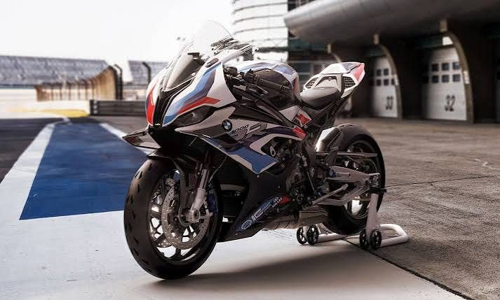

The Beginning of BMW
BMW stands for Bayerische Motoren Werke, or Bavarian Motor Works. The company traces its history back to 1916 in Germany. BMW's early history was connected to the production of aircraft engines.
BMW later expanded into motorcycles and automobiles. Over time, the company became known around the world for producing luxury and performance vehicles.
BMW Motorcycles
Motorcycles have been an important part of BMW's history. BMW began producing motorcycles before it became widely known for its automobiles. Today, BMW Motorrad continues to produce many different types of motorcycles.

BMW Has Produced:
- Aircraft engines
- Motorcycles
- Luxury cars
- Sports cars
- SUVs
BMW Performance
BMW has become well known for performance vehicles and its involvement in motorsports.